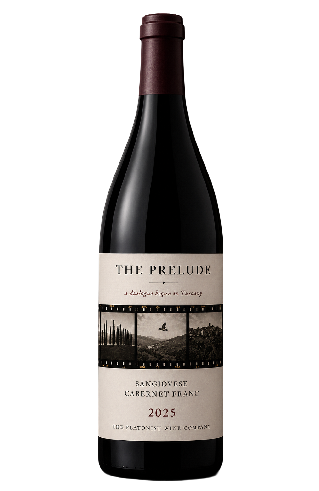

The Prelude
2025 Vintage
Winemaker's Notes
- The Prelude marks our first dialogue between two noble grapes: Sangiovese and Cabernet Franc.
- Inspired by conversations with producers across Tuscany, the wine searches for an expression that belongs fully to neither country, yet emerges from the interaction of both.
- Produced in a single limited release of 720 bottles, The Prelude records the moment the conversation began.
Tasting Notes
We asked how to keep this essentially Sangiovese in nature, with vibrancy introduced by the dark fruits of Cabernet Franc. At 13% Cabernet Franc and 87% Sangiovese, expect added lift and fragrance, including rose petals and Earl Grey on the nose, with tension between red acidity and dark berry fruits on the palate.